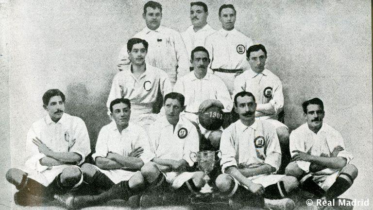
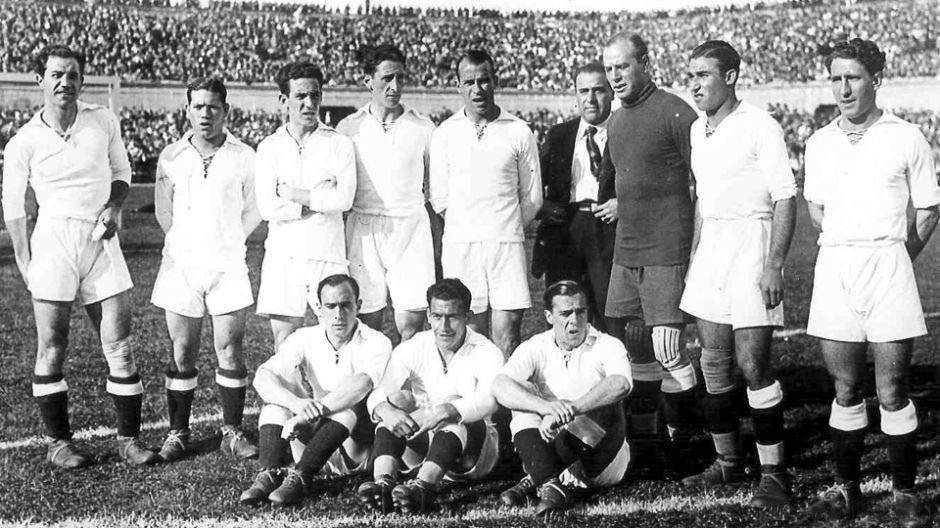
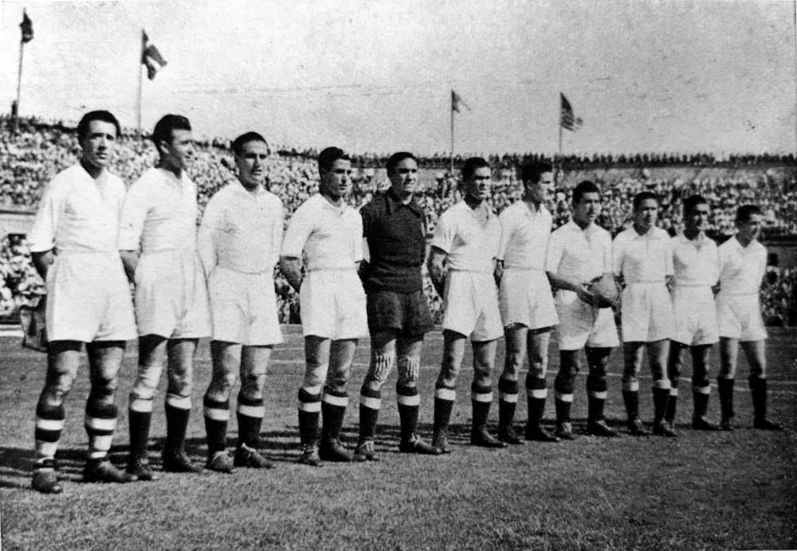
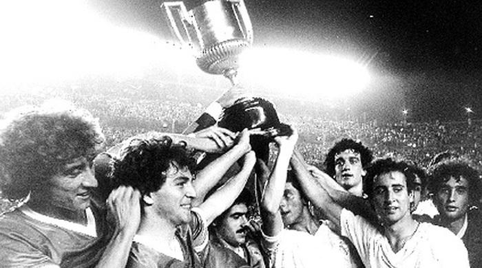
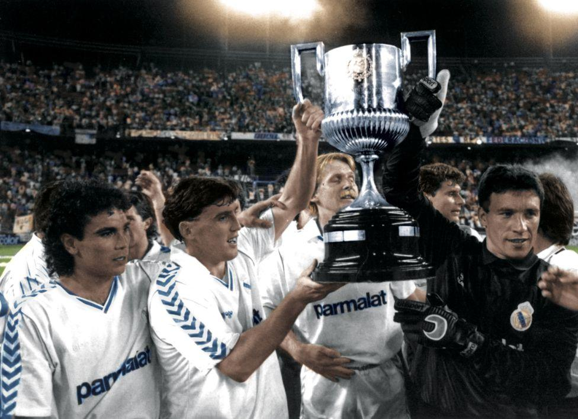
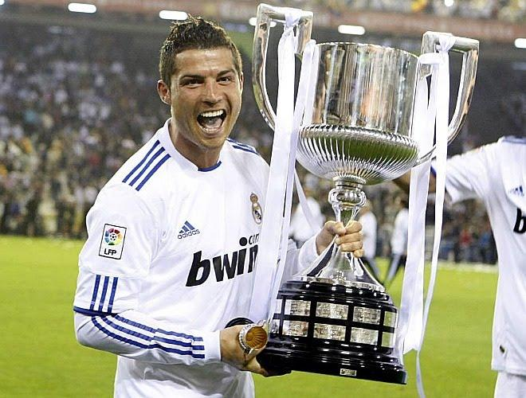
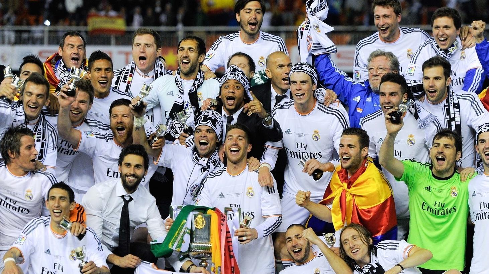
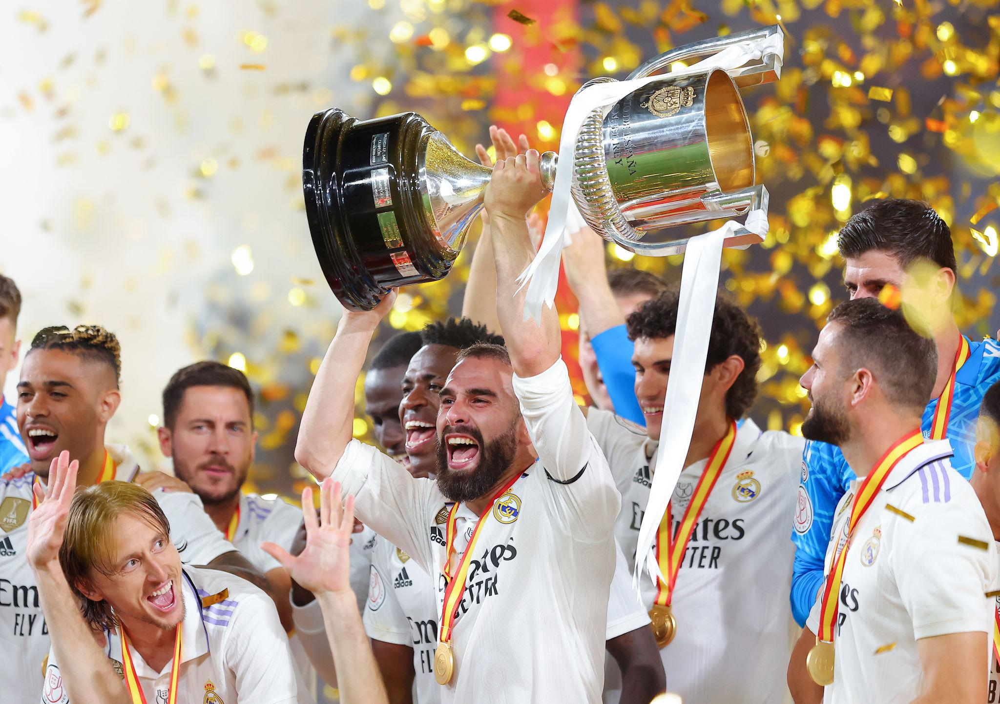

The Copa del Rey (King's Cup) is Spain's oldest national football competition, first played in 1903. It is a knockout tournament involving clubs from across Spanish football. Real Madrid has won the competition 20 times, making them one of the most successful clubs in its history.

Real Madrid, then known as Madrid FC, became the first great force in Spanish cup football.
Achievements
Importance
These victories helped build the club's national reputation and laid the foundations for future success.

1917 Title
Real Madrid ended a nine-year wait by winning the competition again.
1934 & 1936 Titles
The club added two more trophies during the era of the Spanish Republic.
Legendary Players
These teams helped establish Madrid as a national powerhouse before the Spanish Civil War.

After difficult years caused by the Civil War, Real Madrid won back-to-back cups in:
This period coincided with the rise of club president Santiago Bernabéu, whose vision transformed Real Madrid into a global giant.

This period produced six Copa del Rey trophies:
Famous 1980 Final
One of the most unique finals in football history:
Real Madrid vs Castilla CF (Real Madrid's reserve team)
Significance
The club balanced domestic success with continued European ambitions throughout these decades.

The famous generation known as La Quinta del Buitre featured:
Copa del Rey Titles
These victories came during an era when Madrid dominated Spanish football and regularly challenged for European honors.

Real Madrid 1–0 Barcelona
Why It Was Historic

Real Madrid 2–1 Barcelona
Goals:
Bale's Legendary Goal
Bale sprinted past defender Marc Bartra on the outside of the pitch before scoring one of the most famous goals in Copa del Rey history.
Legacy
The victory was the first step toward an unforgettable season that also delivered La Décima, Real Madrid's 10th European Cup.

After a nine-year wait, Real Madrid won their 20th Copa del Rey.
Final
Importance